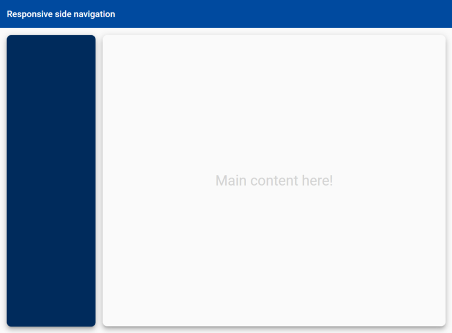

This basic version uses an icon and a label displayed across the top or behind a drop down. see: Responsive NavBar using Flex Layout.
Interface
It is best practice to define types with typescript. Additionally add some booleans to specify to show the item on top or not for various platforms using fxShow.
Sidebar navigation menus are the most common layout pattern used by web apps. see: https://zoaibkhan.com/blog/create-a-responsive-sidebar-menu-with-angular-material/.
Main Theme
Alternate Theme
Scrollbar Component
- scrollbar.component.html: Surrounds content (<ng-content>) with scroll elements (bar and thumb), and event handlers (dragged - see draggable) for vertical and horizontal scrolling.
- scrollbar.component.ts: Contains position calculation functions and for scroll elements.
- draggable.directive.ts: Contains the logic for a behavior directed reusable component, dragging the scroll bar's thumb (mouse move, up, down).
- scrollbar.component.scss: Style for scrollbar elements. Includes variables.
- scrollbar.module.ts: Organizes the required components (scrollbar -req:resize-obzerver, and draggable) into a module.
Install dependencies
- npm i @ng-web-apis/common
- npm i @ng-web-apis/resize-observer
- npm install --save @types/resize-observer-browser